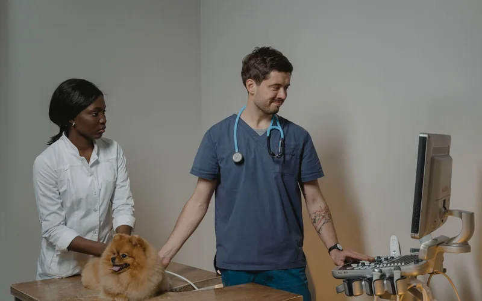
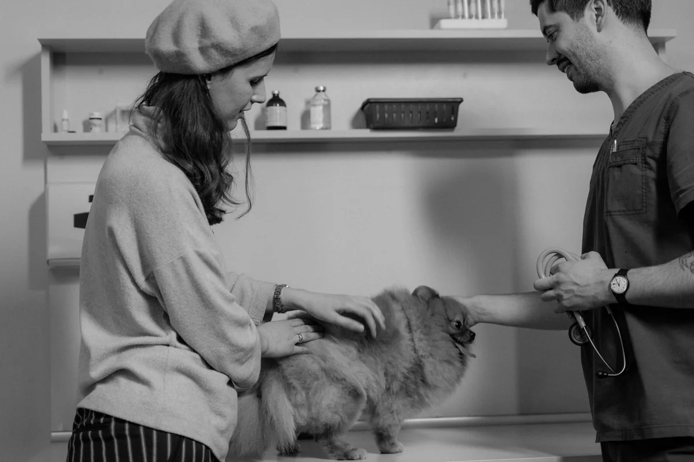
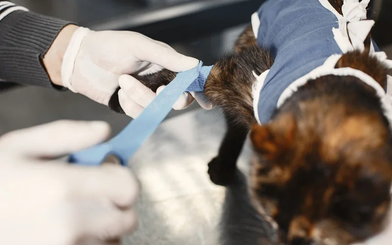
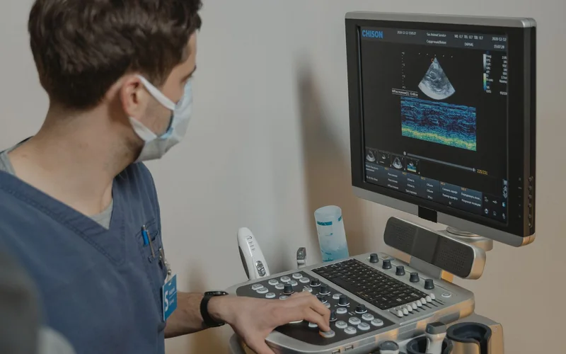
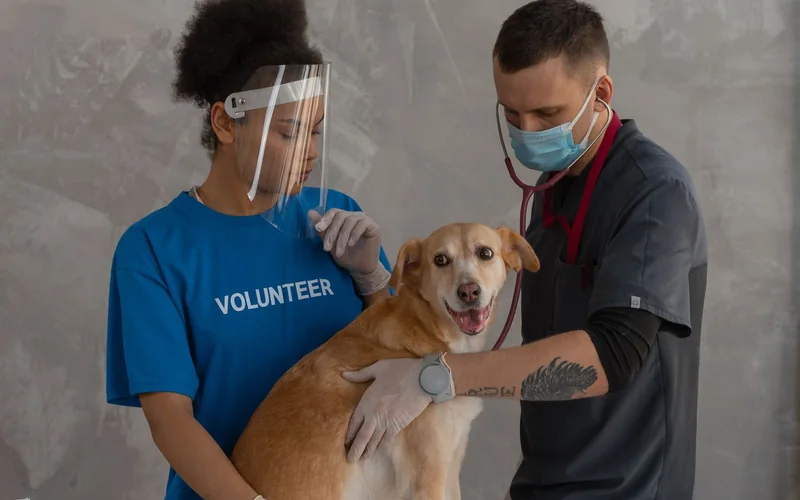
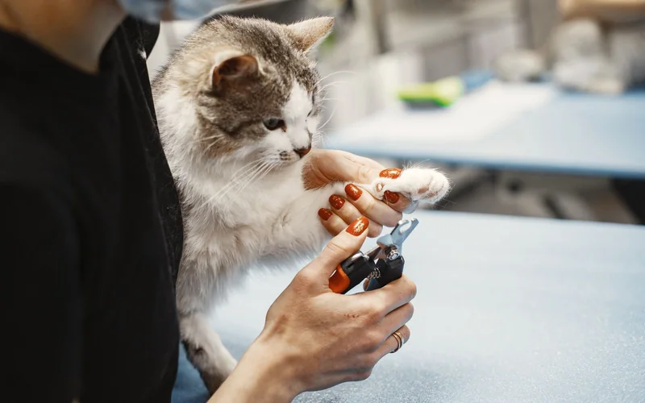

Our Blogs
Explore the latest insights, trends, tips, and expert advice to help you stay informed, perform better, and support your health and wellness journey.
Latest Knowledge Articles

Diagnostic X-Ray Reading: Identifying Thoracic & Abdominal Lesions
Systematic approach to evaluating cardiomegaly, pulmonary opacities, and intestinal foreign bodies in small animal radiographs.


Emergency Triage & Rapid Fluid Resuscitation Protocols
How to triage acute hypovolemic shock, toxic ingestion, and respiratory distress cases during emergency hospital admissions.


Canine Ovariohysterectomy: Suture Selection & Vessel Ligation
Detailed breakdown of pedicle ligation, friction knots, subcuticular closure patterns, and postoperative recovery monitoring.


Ultrasound Probe Positioning for Abdominal AFAST Scans
Mastering the 4 cardinal acoustic windows (diaphragmatico-hepatic, spleno-renal, cysto-colic, hepatorenal) to detect free abdominal fluid.

Role of Vet Nurses in Sterile OR Preparation & Patient Recovery
Essential checklist for clinic assistants: autoclaving cycles, patient positioning, IV catheter placement, and vitals logging.


Post-Op Pain Management & Analgesia Protocols in Small Animals
Combining NSAIDs, opioids, and local nerve blocks for multimodal pain control during post-surgical recovery.
No articles found
Try another search term or choose a different category.